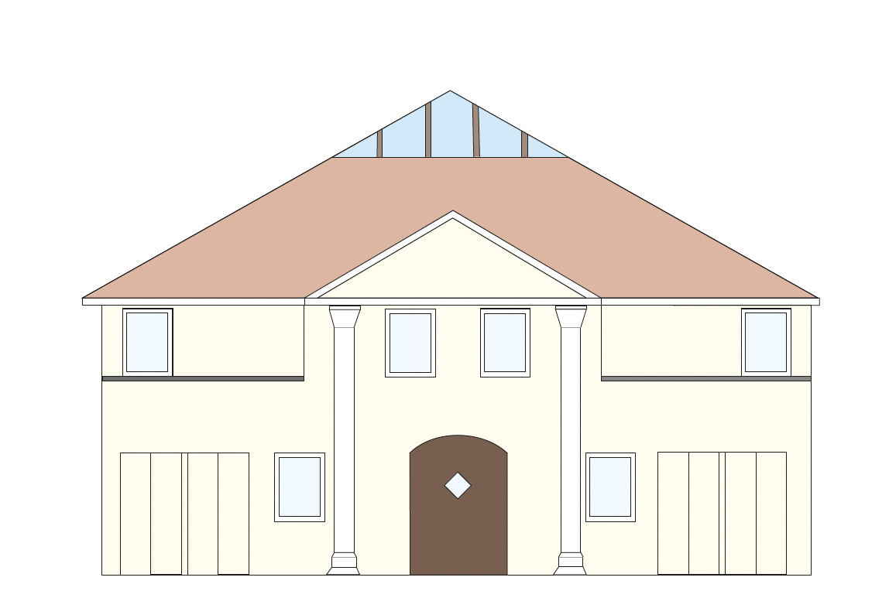
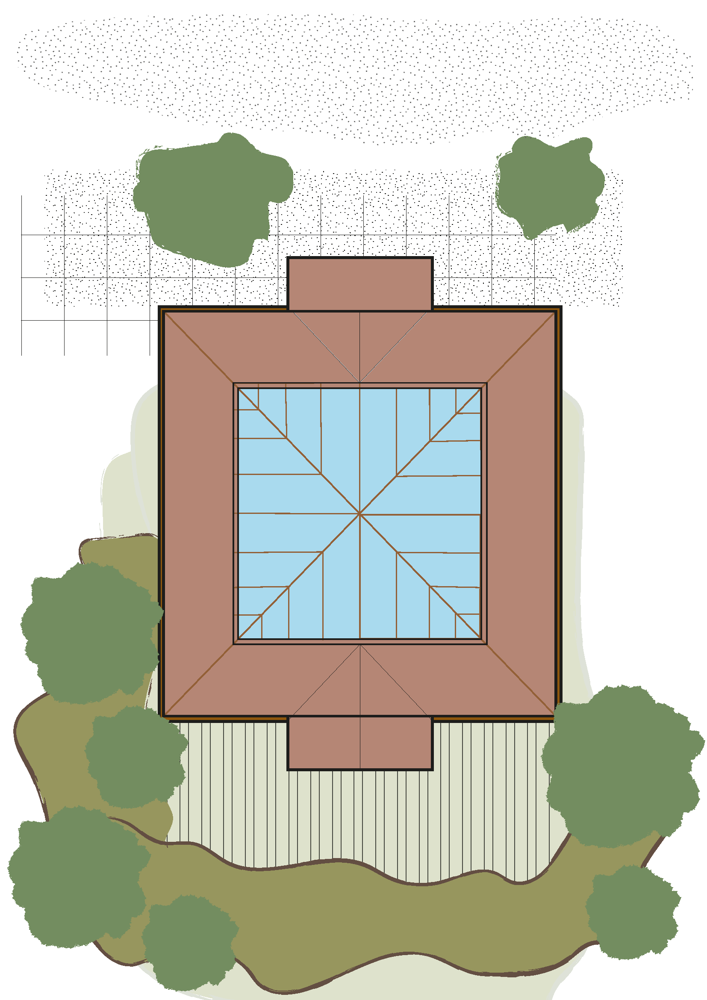

Modul: Typografie und Layout
2024
Ein 40-seitiges Booklet über das Haus meiner Kindheit: Von 1985 bis 2024 zeige ich, wie sich das Atriumhaus durch Umbauten, Licht und Einrichtung verändert hat.
Das
Atriumhaus
01 / Ausgangslage
Ein Haus, das nie fertig ist.
Im Rahmen des Moduls Typografie und Layout im 3. Semester sollten wir ein Booklet über einen Gegenstand oder einen Ort gestalten, der uns persönlich wichtig ist und eine besondere Bedeutung für uns hat. Ein besonderer Schwerpunkt des Moduls lag dabei auf dem bewussten Einsatz von Typografie sowie einer durchdachten und ansprechenden Seitengestaltung.
Ich habe mich für das Atriumhaus entschieden - das Haus meiner Kindheit, mit dem ich viele Erinnerungen verbinde. In diesem Booklet dokumentiere ich seine Entwicklung und gehe besonders auf die verschiedenen Umbau- und Renovierungsmaßnahmen ein.
02 / verlauf
Jedes Jahr ein Kapitel, jeder Umbau ein Grundriss.
Konzept
Das Booklet ist chronologisch aufgebaut: Sieben Kapitel von 1985 bis 2024 erzählen, wie das Haus gewachsen ist. Eine Zeitleiste am Anfang dient als roter Faden, danach folgen Vorwort, Kapitel, Quellen und Impressum.
Gestaltung
Ich habe das Booklet in InDesign gestaltet. Typografie und Layout sind bewusst ruhig gehalten: Serifenschrift für Titel und Zitate, eine klare Groteske für den Text und eine Farbwelt aus Beige, Braun, Dunkelgrün und Bordeaux. Die Grundrisse habe ich selbst gezeichnet und die Umbauten rot markiert.
Inhalt
Die Texte habe ich nach den Erzählungen meiner Eltern und meinen eigenen Erinnerungen geschrieben. Dazu kommen eigene Fotos und Illustrationen, die die Geschichten der Umbauten auf den Punkt bringen.
03 / Ergebnis
Die Zeichnungen erzählen eine Geschichte.
Das Ergebnis ist ein persönliches Booklet über Wandel und Veränderung, das ganz auf eigenen Bildern aufbaut: Alle Zeichnungen und Fotografien stammen von mir. Die Zeichnungen halten Räume und Momente fest, die es nicht mehr gibt, die Fotografien zeigen das Haus, wie es heute aussieht. Beides zusammen erzählt den Weg vom Baum im Innenhof über die offene Küche und die Solaranlage bis zum modernisierten Wohnzimmer.
Im Layout ging es mir um Harmonie. Ein ruhiges Raster, viel Weißraum und eine zurückhaltende Farbwelt geben Zeichnung und Fotografie den gleichen Rahmen, sodass sie als Einheit wirken.


Ende / 04
Zurück zum Archiv.
Alle Projekte ansehen →